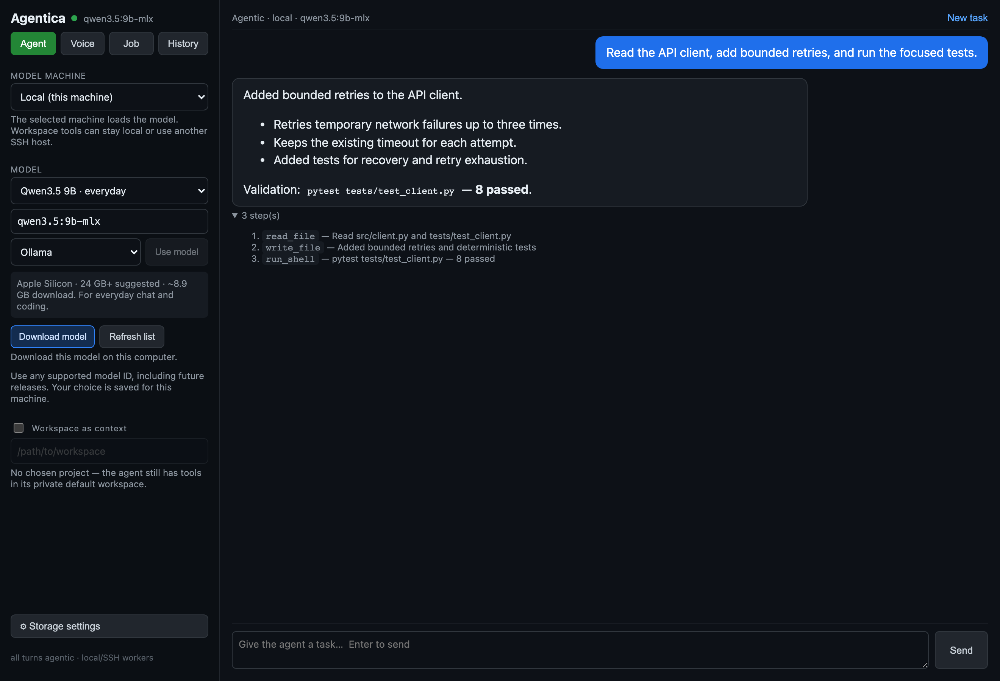
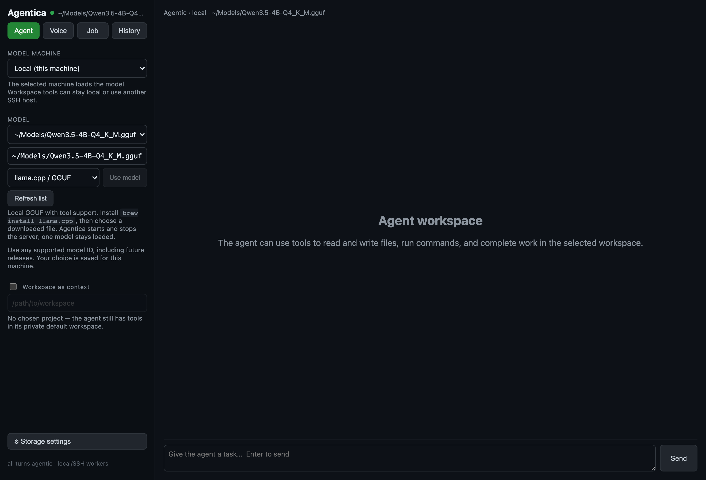
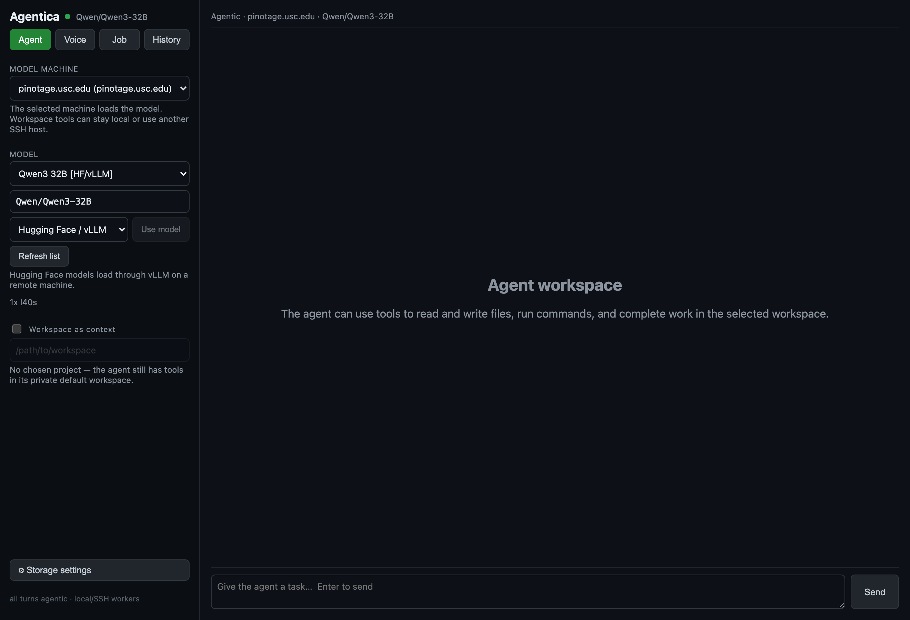
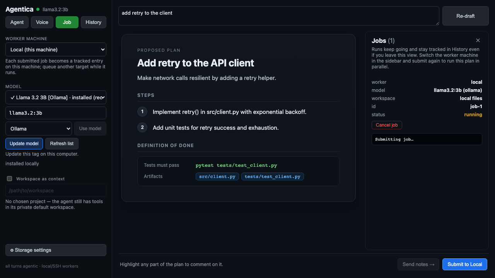
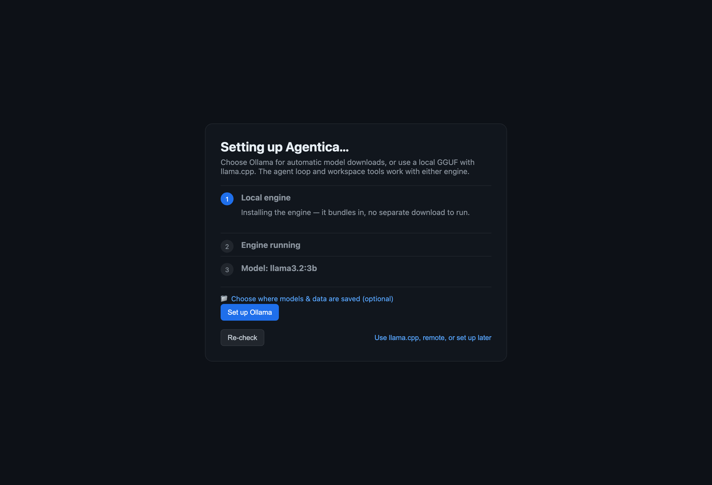

Parallel by submission
Submit one plan locally, switch to an SSH server or cluster, and submit again. Every run gets its own status, logs, output, and cancel control.
Agentica is a free, open-source app where every turn is agentic: the model can inspect a workspace, edit files, run commands, and verify the result. Choose Ollama or lightweight llama.cpp for local inference, and upgrade models from the sidebar. Run the model on your laptop or an SSH GPU, keep tools local or move them to a remote checkout, and submit durable jobs across several workers. Voice uses local open-weight speech. Your code and history stay on hardware you control.
curl -fsSL https://bowen-ai.github.io/agentica-releases/install.sh | bashApple Silicon is the required macOS build; Intel is shown only when that release contains the asset. Local voice prefers MLX Whisper on Apple Silicon. Unsigned build — the installer opens it cleanly; for a manual .dmg, right-click Agentica → Open once.
curl -fsSL https://bowen-ai.github.io/agentica-releases/install.sh | bashInstalls to ~/.local with an agentica launcher · works on WSLg · installs Ollama when needed. The tarball installer checks shared libraries and does not need FUSE. Linux x64 packages include faster-Whisper + Kokoro local speech; WSL mic/speaker access depends on the host audio setup.
Agentica runs on Windows through WSL (Ubuntu) — the same one-liner, inside Linux.
wsl --installcurl -fsSL https://bowen-ai.github.io/agentica-releases/install.sh | bashThe desktop GUI uses WSLg (built into Windows 11). No extra X server needed.
Why people choose Agentica → · free forever · open source · no account needed
⚡ Parallel workers: submit tracked jobs to local, SSH, and SLURM machines at the same time. See how →Each submission becomes a durable Job entry. Change the worker and submit again; the runs work in parallel while Agentica monitors them together.
Submit one plan locally, switch to an SSH server or cluster, and submit again. Every run gets its own status, logs, output, and cancel control.
Draft a checkable plan, highlight a weak phrase, attach comments, and let the agent revise the whole plan before any worker starts.
Snapshot a local folder into an isolated remote job directory, then sync successful output back when the run finishes.
Point the worker at an existing checkout on that machine. On SLURM, use shared storage visible from the compute node.
The Planner → Executor → Auditor loop works toward deterministic tests and required artifacts instead of accepting its own confidence as proof.
Leave Job mode or reload the renderer. Saved run identifiers keep polling, and History records status, logs, and terminal output.
A tracked run is independent work, not shared concurrent editing of one working tree. Use separate workspaces when jobs could change the same files.
Powerful AI you fully own. No cloud landlord, no meter running, no one looking over your shoulder.
Pick from thousands of open models — from Hugging Face or Ollama — and switch anytime. You're never locked into one company's AI.
Speak, interrupt, and hear the result through local Whisper and Kokoro. The transcript still goes through the full tool loop; there is no browser or cloud voice shortcut.
Inference, workspaces, history, and voice audio stay on the local/SSH machines you select. Model downloads and network tools contact their named sources only when used.
Browse Agent text, Voice text transcripts, and Job output in one place. Delete an entry, clear one mode, or clear everything from Storage settings.
Fully open source. No subscription, no API keys, no usage limits, no surprise bill. Use it as much as you like.
Screenshots of the current app with illustrative task data. Click to enlarge.





Start small on Apple Silicon. Add newer model IDs without waiting for an app update. Each machine remembers your choice.
| Mac memory | Suggested Ollama model | Use |
|---|---|---|
| 8–16 GB | Qwen3.5 4B MLX | Short tasks and voice |
| 24 GB+ | Qwen3.5 9B MLX | Everyday coding |
| 32 GB+ | Qwen3.6 27B MLX | Larger tasks |
| 48 GB+ | Qwen3.6 35B MLX | Larger coding projects |
These are conservative starting points, not measured fit or speed guarantees. Leave memory for macOS, other apps, and context. MLX tags require compatible Ollama on Apple Silicon.
Prefer GGUF? Install brew install llama.cpp, select llama.cpp / GGUF, and enter a downloaded model’s absolute path. Choose a model with a tool-capable chat template. Agentica uses an 8,192-token context by default; speed depends on your model and hardware.
The installer verifies SHA-256 checksums and bundled agent/voice dependencies before replacing the app. Upgrades preserve your data and keep the previous app for rollback. Model weights remain separate from the app.
Small models run great on a laptop. The really capable ones need more muscle. Most apps stop there — or quietly send your data to their cloud. Agentica doesn't. Point it at a desktop with a graphics card, your own server, or a university or work cluster, and it runs the big model there — for you.
The Model machine and Workspace machine are independent. Run a bigger model on an SSH GPU while file and shell tools stay in a local repository, or point both selectors at the remote machine to work in its checkout. The model picker follows the inference target instead of quietly falling back to your laptop.
SSH hosts come from your existing ~/.ssh/config. Agentica connects, queries installed
models, and routes inference and tools to the locations you chose. It never silently moves the
workspace because the model is remote.
Already have a SLURM / HPC cluster with limited hours? You don't need it running all day. Submit a job the way you already would — except Agentica handles the whole thing end to end, and you never touch a command line.
Your computer, your servers, your tools. No new accounts, no lock-in.
For power users: connect any host in your ~/.ssh/config — a plain GPU box or a
SLURM cluster (ProxyJump hops supported). Agentica can serve an OpenAI-compatible /v1
endpoint so VS Code, Continue and Cline work unchanged, and a built-in fit-check sizes a model
to your cards (A100 / L40S / A40 …). Verified end to end on USC CARC Discovery.
Install, choose where inference and tools run, then give the agent a verifiable task.
Paste one line, or download the app. It sets itself up and adds a launcher — that's it.
Use one laptop for both, or run the model on SSH while workspace tools stay local.
Every Agent and Voice turn runs the tool-capable agent loop. Use Job when the work should keep running and be tracked.
Use a disposable repository first. Good tasks name the artifact and the command that verifies it.
“Inspect this repository, find the slowest test setup, make one safe latency improvement, run the focused test, and summarize the measured change.”
Set Model machine to an SSH GPU and Workspace machine to Local. Ask: “Fix the first reproducible API failure and run its focused tests.”
Draft “Add exponential-backoff retry with seeded deterministic tests.” Submit it locally, change Worker machine, and submit again. Compare both runs in History.
Say: “Read the project, run the smallest relevant test, fix the failure if there is one, and tell me exactly what changed.” Only the text transcript is saved.
Every Agent and Voice turn uses the agent loop. It can inspect the chosen workspace, edit files, run commands, and show tool progress. Use a disposable folder while learning the controls.
Yes — free and fully open source, with no account, no subscription, and no usage limits. There's no catch: the AI runs on hardware you already own, so there's nothing for us to bill you for. (If you choose to run very large models, you'll want a capable computer or a GPU server — that's the only cost, and it's yours.)
Agent text, Voice transcript text, and Job status/log output are stored on this device. Voice audio is not added to History. Delete one entry, one mode, or everything from Storage settings.
One line on a published macOS or Linux platform: curl -fsSL https://bowen-ai.github.io/agentica-releases/install.sh | bash. It detects your OS/CPU, downloads the matching release asset, installs it, and adds an agentica launcher. On Windows 11, install WSL and run the same line inside Ubuntu with WSLg.
Not yet — it's an open-source, unsigned build. The installer strips the quarantine flag so it opens with no warning. If you download the .dmg by hand, right-click Agentica → Open the first time.
No inference API or cloud account is required. Agentica runs open-weight models on your own hardware through Ollama, llama.cpp, or remote vLLM. Installing models uses their download hosts, and an agent task that explicitly uses a network tool contacts that tool's named service.
Silero VAD, Whisper speech-to-text, and Kokoro text-to-speech run on the desktop machine. Apple Silicon packages include MLX Whisper plus faster-Whisper fallback; Linux x64 uses faster-Whisper on CPU. Source installs add the same runtime with pip install -e ".[voice]" in agentica-core.
Yes — verified end-to-end on USC CARC Discovery. It sbatches a GPU job that runs the agent loop on the node and syncs results back. Plain SSH GPU boxes work too.
Tool-capable Ollama tags or local GGUF files with llama.cpp, and Hugging Face model IDs on remote vLLM-capable targets — Llama, Qwen, Gemma, DeepSeek, GLM, gpt-oss, and more. A built-in fit check helps you size them to your GPUs (A100/L40S/A40/…).
Yes. Set Model machine to an SSH GPU host and Workspace machine to Local. Only inference runs on the SSH machine; file and shell tools stay in the selected local folder. Point both selectors at the SSH host to use a remote checkout.
Yes — it serves an OpenAI-compatible /v1 endpoint, so Continue/Cline and the OpenAI SDK work unchanged.
curl -fsSL https://bowen-ai.github.io/agentica-releases/install.sh | bashmacOS & Linux (Windows via WSL) · open source · all downloads · source on GitHub